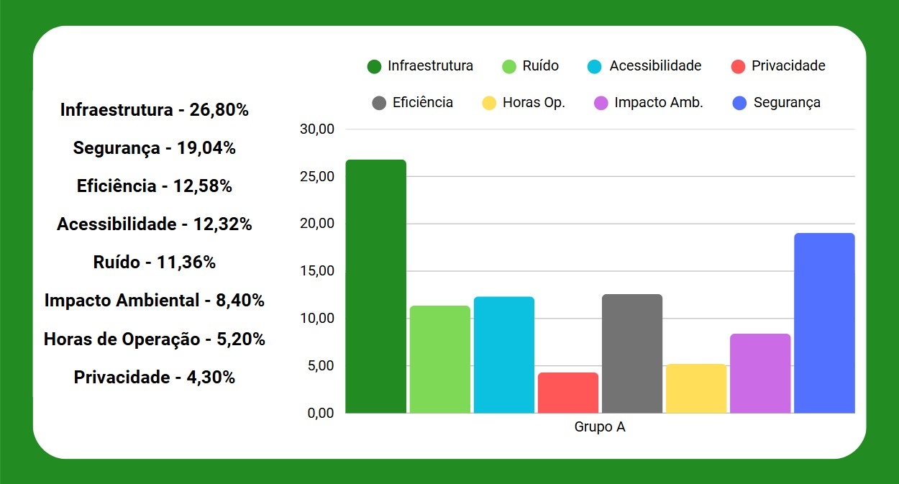
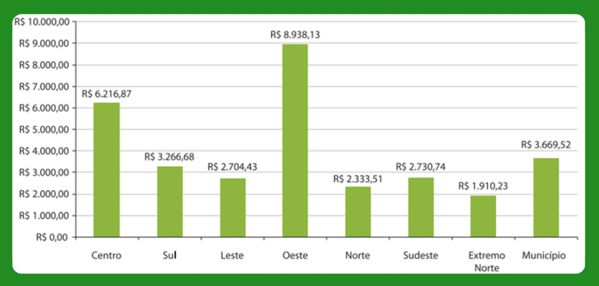
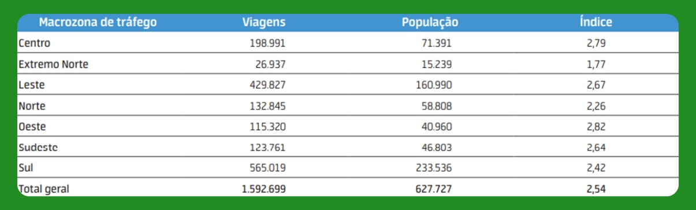

Localização Ótima de Vertiporto
Para avaliar a escolha do sítio são usados critérios que consideram diversos fatores relevantes, aplicados no método Processo Hierárquico Analítico (AHP) para hierarquizar os critérios e alternativas. A Agregação Individual de Prioridades (AIP) é então utilizada para consolidar as avaliações de diferentes participantes, gerando uma avaliação que represente a vontade do grupo, que posteriormente é aplicada aos sítios disponíveis para definir um sítio que melhor se adeque à proposta.
Critérios para Seleção de Sítio
- Infraestrutura disponível - Facilita a implantação do vertiporto, reduz custos e aproveita serviços urbanos já existentes
- Ruído - Evita incômodos à população e garante conformidade com as leis ambientais e urbanas
- Acessibilidade - Garante que as pessoas consigam chegar ao vertiporto com facilidade por outros meios de transporte
- Privacidade - Evita operações próximas a residências ou áreas sensíveis, reduzindo conflitos e restrições
- Eficiência - Favorece o uso prático e estratégico do vertiporto, aproximando-o de zonas com alta demanda
- Horas de operação - Evita locais com restrições horárias que possam limitar o funcionamento do vertiporto
- Impacto ambiental - Reduz danos ao meio ambiente e facilita o licenciamento e a aceitação pública
- Segurança - Minimiza riscos para pedestres, veículos e operações, garantindo um uso mais confiável e legal
AHP (Processo Hierárquico Analítico) Individual
AHP é uma metodologia de tomada de decisão que organiza e analisa complexos problemas através de uma estrutura hierárquica, permitindo comparar e priorizar alternativas com base em critérios quantitativos e qualitativos.
Figura 1 - Resultados individuais para AHP dos oito critérios para escolha de sítio

(Fonte: Autor.)
Discussão Sobre Opiniões Individuais
- Tendência a valorizar a infraestrutura e segurança
- Tendência a desvalorizar a privacidade e horas de operação
- Tendência de manter a importância do ruído, acessibilidade, impacto ambiental e eficiência como medianos
- Razões de consistência abaixo de 10%
AIP (Agregação Individual de Prioridades)
AIP é o processo de combinar as prioridades individuais de diferentes pessoas para obter uma decisão coletiva.
Figura 2 - Resultados do grupo para AIP dos oito critérios para escolha de sítio

Possíveis Sítios
Aeroporto Internacional de SJC Prof. Urbano E. Stumpf
- O Aeroporto Internacional de São José dos Campos (SJK Airport) apresenta-se como um hub multimodal natural, com baixa densidade residencial no entorno e forte conexão logística, ao concentrar a indústria aeroespacial, sobretudo as operações da Embraer. Sua infraestrutura consolidada — pista, torre de controle e perímetro de segurança — permite a integração de VTOLs sem necessidade de grandes obras, ao mesmo tempo em que as zonas de ruído já mapeadas garantem procedimentos de abordagem e decolagem com impacto mitigado sobre áreas urbanas. Inserido em espaço aéreo controlado, o aeroporto exige coordenação com o DECEA para definição de trajetórias, mas beneficia-se de excelente acessibilidade pela Rodovia Dutra e terminais de ônibus metropolitanos. Além disso, protocolos de segurança 24h e a proximidade de mananciais e áreas verdes convidam a estudos ambientais detalhados, especialmente quanto ao manejo de águas pluviais e à conservação da fauna local.
Potencial
- O aeroporto já é um hub de transporte aéreo na região.
- A instalação de um vertiporto permitiria a integração entre voos tradicionais e eVTOLs, criando um centro multimodal.
Vantagens
- Infraestrutura aeroportuária consolidada
- Facilidade de conexão com voos regionais e nacionais
- Área disponível para expansão sem grandes impactos urbanos
- Potencial para atender tanto passageiros quanto cargas
Figura 3 - Sítio Aeroporto SJK no Qgis

(Fonte: Autor)
Bairro Urbanova
- No bairro Urbanova, o perfil residencial planejado — marcado por grandes extensões verdes e polos acadêmicos como a Universidade do Vale do Paraíba (UNIVAP) — gera fluxo constante de estudantes, professores e moradores, o que justifica a implantação de um vertiporto voltado a usos acadêmicos e pendulares. Porém, as restrições acústicas típicas de zonas residenciais demandam operações preferencialmente em horário comercial e vetorização cuidadosa do empuxo para minimizar incômodos. Embora a proximidade de corredores de aproximação do SJK requeira pactuação de trajetórias seguras, o transporte pendular (ida e volta) pelo modal aéreo pode ser uma alternativa às vias de acesso rodoviário, ainda que sem oferta de transporte de alta capacidade. A presença de áreas de preservação permanente ao longo de córregos enfatiza a importância de estudos de drenagem e de impacto sobre a flora e fauna locais, bem como a implantação de soluções de baixo impacto para o entorno.
Potencial
- O Urbanova é um bairro planejado, conhecido por abrigar a Universidade do Vale do Paraíba (UNIVAP) e por ser uma área residencial de alto padrão, com grande potencial para atrair moradores, estudantes e profissionais que buscam mobilidade rápida e eficiente.
Vantagens
- Proximidade com a UNIVAP, que poderia utilizar o vertiporto para transporte de pesquisadores e visitantes
- Área residencial de alto padrão, com potencial para atrair moradores que valorizam a mobilidade urbana avançada
- Localização estratégica, próxima a vias importantes como a Rodovia Presidente Dutra
- Espaço disponível para a construção de infraestrutura sem grandes impactos urbanos
Figura 4 - Sítio Bairro Urbanova no Qgis

(Fonte: Autor)
Parque de Inovação Tecnológica São José dos Campos
- O Parque de Inovação Tecnológica de São José dos Campos (PIT-SJC) é um espaço dedicado a fomentar a ciência, a tecnologia, a inovação e o empreendedorismo, traduzindo-se em demanda clara para voos executivos e acadêmicos. Sua configuração de campus fechado, com vigilância patrimonial e corpo de bombeiros próximo, traz elevada segurança operacional, enquanto corredores rodoviários e ciclofaixas conectam o local ao restante da cidade com agilidade. Situado fora do principal CTR do aeroporto, permite trâmites simplificados na definição de corredores aéreos, ao passo que o perfil misto de uso do solo admite maior tolerância a ruído — sem, é claro, dispensar estudos de impacto acústico. A presença de áreas verdes e espelhos d’água remanescentes reforça a necessidade de um projeto de paisagismo e drenagem responsáveis, minimizando possíveis impactos ambientais.
Potencial
- O Parque Tecnológico é um polo de inovação e tecnologia, abrigando empresas, startups e instituições de pesquisa. Um vertiporto aqui atenderia principalmente executivos, pesquisadores e visitantes de alto nível.
Vantagens
- Proximidade com empresas de tecnologia e aeronáutica, como a Embraer
- Integração natural com o ecossistema de inovação
- Facilidade de conexão com outros modais de transporte
- Infraestrutura já existente para suportar operações avançadas
Figura 5 - Sítio Parque Tecnológico no Qgis

(Fonte: Autor)
Shopping Colinas
- O Shopping Colinas Boulevard destaca-se pelo intenso fluxo de público e pela extensa área de estacionamento, que pode ser convertida para uso de vertiporto sem expansão do perímetro impermeabilizado. A região circundante, caracterizada por bairros de alto padrão e forte adensamento residencial, já convive com elevados níveis de tráfego rodoviário, o que confere certa tolerância a operações de aeronaves VTOL, desde que sejam previstas rotas de chegada e saída que evitem poluição sonora adicional. A infraestrutura de transporte coletivo em frente ao shopping e a disponibilidade de serviços por aplicativo favorecem a intermodalidade, enquanto o sistema de CFTV e segurança privada consolida a proteção dos usuários. A opção por reutilizar áreas já pavimentadas reduz o impacto na malha urbana e facilita a adequação ambiental do vertiporto.
Potencial
- O Shopping Colinas é um dos principais centros de compras e entretenimento da cidade, frequentado por um público de renda mais elevada. Um vertiporto aqui atenderia tanto clientes quanto executivos.
Vantagens
- Grande fluxo de pessoas, justificando a demanda por transporte rápido
- Infraestrutura já existente, como estacionamentos e áreas de apoio
- Proximidade com bairros residenciais de alto padrão
- Possibilidade de integração com serviços de entrega rápida (logística de e-commerce)
Figura 6 - Sítio Shopping Colinas no Qgis

(Fonte: Autor)
Figura 7 - Mapa com possíveis sítios

AHP e AIP Sítios
Com o AHP dentre os sítios para cada critério, é possível definir um AIP para todas as possibilidades de sítio.
Figura 8 - Resultados do grupo para AIP dos quatro sítios de acordo com cada critério

Por fim, de acordo com a prioridade entre os critérios e a prioridade entre os sítios de acordo com os critérios, é possível definir o sítio no qual o vertiporto será projetado, que é o Aeroporto Internacional de São José dos Campos Professor Urbano Ernesto Stumpf.
Figura 9 - Resultados de escolha do sítio a partir do AIP para critérios e AIP para sítios

Zoneamento e Modelagem de Demanda
Para avaliar a demanda e realizar a análise de viagens entre vertiportos e macrozonas, é necessário dividir o espaço urbano em zonas de estudo e aplicar modelos que representem o comportamento de escolha dos usuários, sendo utilizados o Modelo de Gravidade e o Modelo de Huff, que permitem estimar o fluxo de viagens e a probabilidade de utilização dos vertiportos.
Divisão em Macrozonas
A cidade pode ser dividida em sete regiões geográficas principais, ou macrozonas:
- Centro
- Norte
- Sul
- Sudeste
- Leste
- Oeste
- Extremo Norte
Regiões mais populosas: Leste e Sul
Regiões com maior densidade populacional: Centro e Sul
Figura 10 - Número de habitantes e densidade populacional

(Fonte: Adaptado de FGV Atlas OD)
Renda Per Capita Mensal por Macrozona
- Regiões com maior renda per capita mensal: Oeste, Centro e Sul
Figura 11 - Renda per capita mensal média

(Fonte: Adaptado de IBGE)
Principais Regiões de Origem das Viagens:
- Sul
- Centro
- Leste
Principais Regiões de Destino das Viagens:
- Sul
- Leste
- Centro
Figura 12 - Viagens entre as macrozonas

(Fonte: Adaptado de FGV Atlas OD)
Regiões com Maior Mobilidade:
- Oeste
- Centro
- Leste
Figura 13 - Índice de mobilidade por região

(Fonte: Adaptado de FGV Atlas OD)
Zoneamento Urbano e Uso de Solo
Divisões de Zoneamento Urbano e Uso de Solo:
- Centralidade
- Corredores
- Zonas residenciais
- Zonas de uso diversificado
- Zonas industriais
- Zonas especiais
- Zona aeroportuária
- Zoas de São Francisco Xavier
Figura 14 - Mapa de uso e ocupação do solo de São José dos Campos

(Fonte: Adaptado de IBGE e Prefeitura de São José dos Campos)
Modelo de Gravidade
O Modelo de Gravidade é utilizado para estimar o número de viagens entre os vertiportos e as macrozonas, considerando as seguintes variáveis:
- Tij – Número estimado de viagens entre o vertiporto ( i ) e a macrozona ( j ): Representa o resultado da equação em formato de matriz, mostrando o número estimado de viagens partindo de cada vertiporto para cada macrozona
- Pi – Fator de produção associado ao vertiporto ( i ): Representa a capacidade do vertiporto de gerar viagens, refletindo o potencial de suprir a demanda
- Aj – Fator de atração da macrozona ( j ): Representa o poder da macrozona de atrair os usuários, demonstrando a tendência das pessoas de irem à essa região
- cij – Custo de deslocamento entre ( i ) e ( j ): Representa a dificuldade ou penalização relacionada à distância entre vertiporto e macrozona
- β – Parâmetro de impedância: Representa o grau de dificuldade ou penalização também relacionada à distância entre vertiporto e macrozona
- k – Constante de proporcionalidade: Representa a escala do modelo
A formulação geral do modelo é dada por:
Tij = k × (Pi × Aj) / cijβ
Para a aplicação prática do modelo, são consideradas as seguintes macrozonas:
- Centro
- Norte
- Sul
- Sudeste
- Leste
- Oeste
Os vertiportos definidos são:
- Aeroporto Internacional de SJC Prof. Urbano E. Stumpf
- Bairro Urbanova
- Parque Tecnológico
- Shopping Colinas
Para o fator de produção Pi, é utilizado o critério de infraestrutura disponível de cada vertiporto, tendo sido avaliado anteriormente a partir do método AHP e AIP, considerando uma nota entre 0 e 100. Por ser utilizado um valor que reflete justamente uma maior capacidade do sítio avaliado anteriormente pelos métodos citados, é esperado que o sítio com maior demanda de viagens seja justamente este, ou seja, o Aeroporto de São José dos Campos.
Figura 15 - Fator de produção de cada vertiporto

(Fonte: Autor)
Para o fator de atração Aj, é estimado um valor de 0,001% das viagens com destino a respectiva macrozona. O valor utilizado é meramente uma estimativa, considerando que uma pequena parte das viagens realizadas para cada macrozona se dará a partir do modal aéreo utilizando aeronaves eVTOL.
Figura 16 - Fator de produção de cada macrozona
(Fonte: Autor)
O custo de deslocamento cij é obtido a partir da criação de uma matriz com as distâncias (km) aérea entre cada vertiporto e cada macrozona.
Figura 17 - Matriz de distância aérea entre macrozonas e vertiportos
(Fonte: Autor)
O parâmetro de impedância β = 1.5 foi estimado a partir de iterações . É interessante notar que o parâmetro de impedância, em casos usuais, penaliza voos mais distantes, mas no caso de viagens entre vertiportos em São José dos Campos, o valor absoluto de distância é extremamente baixo em todos os casos (menor que 16,5 km), ou seja, voos mais distantes (até 16,5 km) são desejados para maior eficiência, já que viagens de poucos km são mais vantajosas utilizando veículos comuns, que irão oferecer um tempo de viagem semelhante e menores custos. Após a estimativa do valor de impedância, o mesmo é validado a partir da literatura, convergindo para -0,1 - A demand forecasting model for urban air mobility in Chengdu, China.
A constante de proporcionalidade k é ajustada de forma que os resultados estejam em uma escala interpretável e coerente com a quantidade de viagens esperadas, convergindo para 0,25. Caso este valor seja superior ao utilizado, a estimativa de demanda irá retornar uma maior quantidade de viagens, mas novamente, conforme descrito anteriormente, é esperado apenas uma pequena quantidade de viagens neste modal.
A aplicação do modelo com os parâmetros definidos resulta na matriz origem-destino estimada, que indica o número relativo de viagens partindo de cada vertiporto para cada macrozona. Essa matriz permite observar tendências de fluxo, identificar zonas com maior atratividade e subsidiar decisões sobre localização ótima de vertiportos, planejamento de rotas e integração modal.
Figura 18 - Matriz de origem-destino entre vertiportos e macrozonas

(Fonte: Autor)
A matriz origem-destino revela tendências de fluxo compatíveis com os perfis de produção e atração definidos. O Aeroporto Internacional de São José dos Campos, com maior fator de produção Pi = 52,6 , apresenta os maiores volumes de viagens estimadas, destacando-se nas conexões com o Sul (76 viagens) e Leste (60 viagens) — macrozonas que, por sua vez, possuem os maiores fatores de atração.
O Shopping Colinas também se destaca com valores expressivos, especialmente em direção ao Sul (43) e ao Leste (34), refletindo tanto seu potencial comercial quanto sua boa localização relativa e baixa distância penalizada pelo valor negativo de β = -0.1. Esse valor de β, ao inverter o efeito tradicional da impedância, favorece deslocamentos um pouco mais longos, alinhados à lógica de que viagens muito curtas tendem a ser supridas por meios terrestres convencionais.
Já o Parque de Inovação Tecnológica e o Urbanova apresentam valores mais modestos, consistentes com seus menores fatores de produção e com sua localização mais periférica em relação às zonas de maior atração.
A matriz gerada fornece um panorama inicial bastante útil para:
- Priorizar investimentos em vertiportos com maior potencial de geração de viagens;
- Compreender a relação espacial entre origem e destino em contextos urbanos de média escala;
- Refinar trajetórias e horários operacionais, especialmente para evitar sobreposição de rotas em regiões sensíveis;
- Apoiar decisões sobre fases de implementação e escalonamento da infraestrutura.
É importante destacar que o estudo realizado possui limitações devido a abordagem e aos dados utilizados. Essas limitações se dão principalmente pelo uso de dados estabelecidos empiricamente, como é o caso do fator de produção e do fator de atratividade, definidos a partir da priorização de critérios e análise empírica dos sítios, e da percepção de uma pequena quantidade de viagens adotadas inicialmente, ou seja, por serem utilizadas estimativas que refletem as escolhas dos autores, os resultados seguem uma tendência de mostrar o que já era esperado ainda durante os estudos de critérios dos sítios.
Ainda, uma forma de mitigar essas tendências e aumentar a qualidade do estudo seria utilizar de dados que possuem menor correlação com as escolhas dos autores e que sejam validados, como a percepção dos usuários finais das aeronaves eVTOL, ou seja, os passageiros. Também é interessante citar que diferentes dados usados para o modelo podem gerar diferentes estimativas de demanda, ou seja, em cenários que outros critérios sejam avaliados, o sítio ótimo poderia ser outro.
Modelo de Huff
O Modelo de Huff é utilizado para estimar a probabilidade de escolha de um vertiporto por parte de usuários de diferentes macrozonas, com base na atratividade da alternativa e na distância percorrida para acessá-la. Esse modelo é particularmente útil para analisar o comportamento de decisão dos usuários diante de múltiplas opções de transporte. São consideradas as seguintes variáveis:
- Pij – Probabilidade de um usuário da macrozona ( i ) escolher o vertiporto ( j ): Representa o peso relativo da escolha do vertiporto diante das demais alternativas disponíveis
- Aj – Atratividade do vertiporto ( j ): Representa a atratividade completa do vertiporto com base em todos os critérios de seleção de sítio descritos anteriormente
- cij – Custo de deslocamento entre a macrozona ( i ) e o vertiporto ( j ): Expressa a distância ou tempo de deslocamento
- λ – Parâmetro de sensibilidade à distância: Controla o quanto o custo influencia negativamente a escolha
- n – Número de alternativas disponíveis: Representa o conjunto de vertiportos considerados no somatório
A formulação geral do modelo é dada por:
Pij = (Aj / cijλ) / Σ(Ak / cikλ)
Para a aplicação prática do modelo, são utilizadas as mesmas macrozonas e vertiportos definidas no Modelo de Gravidade.
A atratividade Aj de cada vertiporto é atribuída com base na decisão final de escolha de sítio, ou seja, a nota final para os oito critérios de avaliação, conforme concluído pelos métodos AHP e AIP anteriormente.
O custo de deslocamento cij é o mesmo utilizado no modelo anterior, baseado nas distâncias aéreas entre macrozonas e vertiportos.
O parâmetro de sensibilidade à distância λ = -0,1 foi definido com base em iterações de acordo com o comportamento das probabilidades no resultado na equação, de forma a manter a atratividade de utilizar viagens com eVTOLs para destinos mais distantes, aumentando a eficiência da viagem, de forma semelhante ao descrito anteriormente.
A aplicação do modelo resulta na matriz de probabilidades Pij, representando a probabilidade de um usuário de cada macrozona escolher cada vertiporto como ponto de partida ou chegada.
Figura 20 - Matriz de probabilidades de escolha entre macrozonas e vertiportos
(Fonte: Autor)
A aplicação do Modelo de Huff resultou em uma matriz de probabilidades de escolha para cada vertiporto, considerando a nota final de atratividade atribuída a partir de 8 critérios multicritério (e não apenas infraestrutura), além da penalização da distância por meio do parâmetro λ = -0,1.
Os resultados demonstram que o Aeroporto Internacional de SJC mantém as maiores probabilidades de escolha em praticamente todas as macrozonas, com valores variando entre 41% e 44%, o que reflete sua alta atratividade total (49,672), aliada a distâncias competitivas mesmo em macrozonas mais afastadas.
O Parque Tecnológico, com nota de atratividade intermediária (31,223), apresenta probabilidades médias, entre 24% e 29%, mostrando forte preferência relativa especialmente nas zonas Sul, Oeste e Centro, onde sua posição geográfica e o equilíbrio com os custos de deslocamento geram vantagem comparativa.
O Shopping Colinas, embora com menor nota geral (20,168), mantém probabilidades consistentes na faixa de 16% a 18%, sugerindo que a boa localização e a facilidade de acesso compensam, em parte, sua atratividade mais modesta.
O Urbanova, com a menor nota de atratividade geral (12,902), apresenta as menores probabilidades em todas as macrozonas, com valores abaixo de 12%, refletindo seu perfil mais restrito de uso e localização periférica em relação aos polos urbanos mais ativos.
Essa análise por probabilidades:
- Reflete o comportamento provável de escolha dos usuários, em um cenário com múltiplas opções disponíveis
- Complementa a matriz de gravidade ao considerar não apenas a intensidade de fluxo, mas também a distribuição relativa da preferência
- Permite visualizar como a atratividade total afeta diretamente a decisão do usuário, mesmo diante de distâncias diferentes
- Auxilia na priorização de investimentos e definição de políticas operacionais para cada vertiporto
É importante destacar que, de forma semelhante para o modelo de gravidade, o estudo realizado com o modelo de Huff também possui limitações devido a abordagem e aos dados utilizados. Essas limitações se dão, de forma semelhante, pelo uso de estimativas que refletem as escolhas dos autores, portanto, os resultados seguem uma tendência de mostrar o que já era esperado ainda durante os estudos de critérios dos sítios. Nos dois casos os parâmetros de sensibilidade β e λ foram ajustados para diminuir essa tendência e aumentar a influência do que é importante para a eficácia deste tipo de transporte aéreo em curtas distâncias absolutas, o que é perceptível em ambos os resultados a partir do número de viagens e chance de escolha, mesmo que não superior, mas próximo, entre os valores das macrozonas e vertiportos que possuem maior atratividade e os valores das macrozonas e vertiportos que possuem maior distância, ou seja, maior eficiência.
Por fim, análise conjunta dos modelos de Gravidade e Huff revela resultados consistentes, mas com ênfases distintas: enquanto o Modelo de Gravidade foca na quantidade estimada de viagens entre origens e destinos, o Modelo de Huff se concentra na probabilidade relativa de escolha entre alternativas.
No Modelo de Gravidade, os vertiportos com maior fator de produção e melhor posicionamento geográfico — como o Aeroporto Internacional de SJC e o Shopping Colinas — concentram a maior parte dos fluxos totais estimados. Já o Modelo de Huff, ao incorporar comportamento de escolha, reforça a preferência pelo Aeroporto devido à sua alta atratividade global, mas também destaca como vertiportos medianamente atrativos, como o Parque Tecnológico, podem alcançar relevância em zonas específicas.
Além disso, o Modelo de Huff evidencia que mesmo alternativas com menor atratividade, como o Urbanova, mantêm alguma participação proporcional, ainda que reduzida, ao passo que o Modelo de Gravidade pode atribuir valores muito baixos ou nulos em termos absolutos.
Em conjunto, os dois modelos oferecem uma visão complementar: o Gravidade projeta demanda em volume, enquanto o Huff interpreta a escolha com base na atratividade e acessibilidade relativa, ampliando a qualidade da tomada de decisão para a localização e operação de vertiportos urbanos.